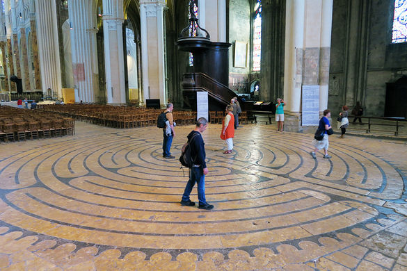
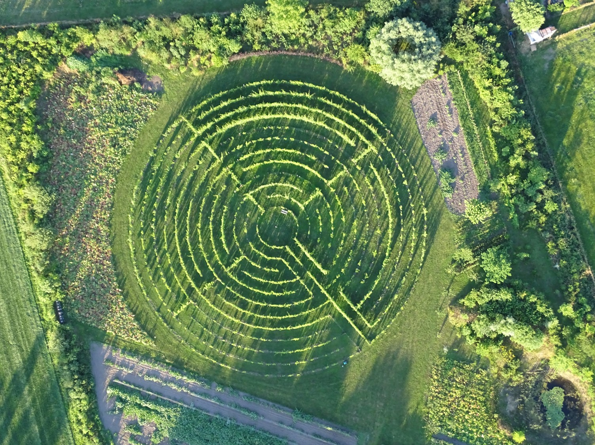

Centraal in Het Groene Woud, op de locatie van Winery & Herbs, is in 2012 naar het voorbeeld van het 12e-eeuwse labyrint in de kathedraal van Chartres (Frankrijk), een druivenlabyrint aangeplant met verschillende soorten druivenstokken. Deze locatie is niet toevallig, want Winery & Herbs heeft, als een van de acht bezoekerscentra van nationaal landschap Het Groene Woud, een sterke ambitie om het toeristisch-recreatieve aanbod maximaal voor het voetlicht te brengen. Bovendien wil de initiatiefnemer de krachten bundelen met uiteenlopende andere toeristisch-recreatieve en cultuurhistorische initiatieven in de omgeving. Dit alles met de bedoeling om de potenties van Het Groene Woud maximaal te benutten en meer bezoekers te trekken.

Het Labyrint van Chartres heeft o.a. een religieuze betekenis. Vanuit de christelijke opvatting staat het kruis voor het offer dat nodig is om een nieuwe richting in te slaan. Ook wordt het labyrint als zoektocht in het onderbewustzijn weergegeven. Het letterlijk doorlopen van het labyrint verklaart vaak de voldoening die gevonden wordt zodra men het middelpunt bereikt en men kan terugkijken op de wirwar van paden die is afgelegd. Het kenmerk van het labyrint is dat een ieder altijd het centrum bereikt, ondanks de bochten en tegengestelde richtingen, zonder te verdwalen. Het middelpunt wordt als het middelpunt van je eigen wezen beschouwd en vervolgens kunnen weer nieuwe richtingen worden ingeslagen.

Het Druivenlabyrint staat daarmee voor bezinning, bezieling, inkeer en rust waarbij je jezelf centraal stelt tijdens de activiteit. In het labyrint ben je vooral met jezelf en je eigen ontwikkeling bezig. Met deze gedachten is het idee ontstaan om, nadat je het Druivenlabyrint hebt aangedaan, weer in contact te komen met de omgeving; in contact te komen met Het Groene Woud!
Nieuw verhaal aanleveren
Randvoorwaarden
Fijn dat u uw verhaal met ons wilt delen. Hieronder vindt u de richtlijnen voor het aanleveren van een Labyrintverhaal.
Fotobestanden graag los aan het indienformulier toevoegen.
Bestanden groter dan 30MB aanleveren via WeTransfer: Winery & Herbs, info@wineryandherbs.nl, o.v.v. Labyrintverhal, voornaam + achternaam. Niet vergeten het aanleverformulier in te vullen en te verwijzen naar de WeTransfer.
Uw Verhaal zal na controle van de leden van de stiching online getoond op de website van Verhalen van het Labyrint als onderdeel van het Land-Art Project